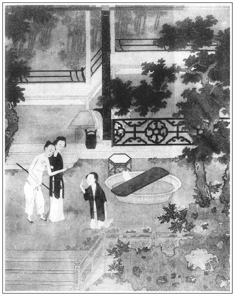

張回至此回，諸妾已散盡矣。然李公子來求親，卻雲玉樓愛嫁，誅心之論。
薛嫂舊媒，陶媽新媒。夫桃旁之雪，乃是杏花之色，非若前此之雪壓枝頭以相欺也。
算命以及「妻大兩，黃金長」等語特特相犯，即用薛嫂喚醒多少癡人。而止留銀壺作念，其餘凡玉樓者皆帶去，知挑楊姑娘罵張四舅何益。而月娘送茶赴席，則李家又添一西門姑娘或西門大姨，西門慶如有兄弟，又當為西門大舅也。可笑，可想。即寫玉簪，總是作者教人慎持富貴於得意時，而又見風波世路無刻不然，才得微名，即為身患也。
夫西門等之熱，熱以錢耳；讀書人之熱，熱必以名。今玉樓既不熱於西門慶家，且杏花乃狀元之稱，宜乎讀書人之所謂熱者也。乃熱以名而名即為累，此玉簪之所以為玉樓累也。觀玉樓之名必鐫於簪上可知。故上文講財色的利害已完，又恐人不知而求名，故於此回又將「名」之一字為累，痛切為人陳之，見必至玉簪兒賣掉了方能安穩。
詩曰：
簟展湘紋浪欲生，幽懷自感夢難成。
倚床剩覺添風味，開戶羞將待月明。
擬倩蜂媒傳密意，難將螢火照離情。
遙憐織女佳期近，時看銀河幾曲橫。

話說一日，陳敬濟聽見薛嫂兒說知孫雪娥之事。這陳敬濟乘著這個根由，就如此這般，使薛嫂兒往西門慶家對月娘說。薛嫂只得見月娘，說：「陳姑夫在外聲言發話，說不要大姐，要寫狀子，巡撫、巡按處告示，說老爹在日，收著他父親寄放的許多金銀箱籠細軟之物。」繡眉孤兒寡婦之苦如此。這月娘一來因孫雪娥被來旺兒盜財拐去，二者又是來安兒小廝走了，三者家人來興媳婦惠秀又死了，剛打發出去，張夾一連結出三事，見月娘吐放物之難。看人為瓶兒一哭。家中正七事八事，聽見薛嫂兒來說此話，諕的慌了手腳，連忙雇轎子，打發大姐家去。但是大姐床奩箱廚陪嫁之物，交玳安僱人，都抬送到陳敬濟家。張夾以先何不抬去？以此知月娘貪刻陰毒，無處不然也。敬濟說：「這是他隨身嫁我的床帳妝奩，還有我家寄放的細軟金銀箱籠，須索還我。」薛嫂道：「你大丈母說來，當初丈人在時，止收下這個床奩嫁妝，並沒見你別的箱籠。」敬濟又要使女元宵兒。薛嫂兒和玳安兒來對月娘說。月娘不肯把元宵與他，說：「這丫頭是李嬌兒房中使的，如今留著晚早看哥兒哩。」把中秋兒打發將來，說：「原是買了伏侍大姐的。」這敬濟又不要中秋兒，兩頭來回只教薛嫂兒走。他娘張氏向玳安說：「哥哥，你到家拜上你大娘，你家姐兒們多，也不稀罕這個使女看守哥兒。既是與了大姐房裡好一向，你姐夫已是收用過了他，你大娘只顧留怎的？」玳安一面到家，把此話對月娘說了。月娘無言可對，只得把元宵兒打發將來。敬濟收下，滿心歡喜，說道：「可怎的也打我這條道兒來？」正是：
饒你奸似鬼，吃我洗腳水。
按下一頭。單說李知縣兒子李衙內，自從清明郊外看見吳月娘、孟玉樓兩人一般打扮，生的俱有姿色，知是西門慶妻小。衙內有心，愛孟玉樓生的長挑身材，瓜子面皮，模樣兒風流俏麗。原來衙內喪偶，鰥居已久，一向著媒婦各處求親，都不遂意。及見玉樓，便覺動心，但無門可入，未知嫁與不嫁，從違如何。不期雪娥緣事在官，已知是西門慶家出來的，周旋委曲，在伊父案前，將各犯用刑研審，追出贓物數目，望其來領。繡眉稍有影響，便欲下釣，寫出好色人一片癡心。張夾補出。月娘害怕，又不使人見官。衙內失望，因此才將贓物入官，雪娥官賣。至是衙內謀之於廊吏何不韋，逕使官媒婆陶媽媽來西門慶家訪求親事，許說成此門親事，免縣中打卯，還賞銀五兩。
這陶媽媽聽了，張夾必用陶媽媽，自是桃夭之慶，非如寒雪漫空也。喜歡的疾走如飛，一日到於西門慶門首。來昭正在門首立，只見陶媽媽向前道了萬福，說道：「動問管家哥一聲，此是西門老爹家？」張夾冷甚。來昭道：「你是那裡來的？老爹已下世了，有甚話說？」陶媽媽道：「累及管家進去稟聲，我是本縣官媒人，名喚陶媽媽，奉衙內小老爹鈞語，分付說咱宅內有位奶奶要嫁人，敬來說親。」那來昭喝道：「你這婆子，好不近理！我家老爹沒了一年有餘，止有兩位奶奶守寡，並不嫁人。常言疾風暴雨，不入寡婦之門。你這媒婆，有要沒緊，走來胡撞甚親事？還不走快著，惹的後邊奶奶知道，一頓好打。」那陶媽媽笑道：「管家哥，常言官差吏差，來人不差。小老爹不使我，我敢來？嫁不嫁，起動進去稟聲，我好回話去。」來昭道：「也罷，與人方便，自己方便，你少待片時，等我進去。兩位奶奶，一位奶奶有哥兒，一位奶奶無哥兒，不知是那一位奶奶要嫁人？」陶媽媽道：「衙內小老爹說，清明那日郊外曾看見來，是面上有幾點白麻子的那位奶奶。」
來昭聽了，走到後邊，如此這般告訴月娘說：「縣中使了個官媒人在外面。」倒把月娘吃了一驚，說：「我家並沒半個字兒迸出，外邊人怎得曉的？」來昭道：「曾在郊外，清明那日見來，說臉上有幾個白麻子兒的。」月娘便道：「莫不孟三姐也『臘月裡羅卜──動個心』？忽剌八要往前進嫁人？張夾月娘原不識玉樓，一向蓋為玉樓牢籠久矣。正是『世間海水知深淺，惟有人心難忖量』」。一面走到玉樓房中坐下，便問：「孟三娘，奴有件事兒來問你，外面有個保山媒人，說是縣中小衙內，清明那日曾見你一面，說你要往前進。端的有此話麼？」繡眉眾人待我，眾人報之。玉樓雖賢，自無終守之理，月娘何見之晚。看官聽說，當時沒巧不成話，自古姻緣著線牽。那日郊外，孟玉樓看見衙內生的一表人物，風流博浪，兩家年甲多相彷彿，又會走馬拈弓弄箭，彼此兩情四目都有意，已在不言之表。但未知有妻子無妻子，口中不言，心內暗度：「男子漢已死，奴身邊又無所出。雖故大娘有孩兒，到明日長大了，各肉兒各疼。閃的我樹倒無陰，竹籃兒打水。」又見月娘自有了孝哥兒，心腸改變，不似往時，「我不如往前進一步，尋上個葉落歸根之處，還只顧傻傻的守些甚麼？到沒的擔閣了奴的青春年少。」正在思慕之間，不想月娘進來說此話，正是清明郊外看見的那個人，心中又是歡喜，又是羞愧，口裡雖說：「大娘休聽人胡說，奴並沒此話。」不覺把臉來飛紅了，繡眉總是有良心人情景。張夾愛嫁如此寫來，卻是安身立命之意，不是金蓮輩妖淫等也。正是：
含羞對眾休開口，理鬢無言只搵頭。
月娘說：「此是各人心裡事，奴也管不的許多。」一面叫來昭：「你請那保山進來。」來昭門首喚陶媽媽，進到後邊見月娘，行畢了禮數，坐下。小丫鬟倒茶吃了。
月娘便問：「保山來，有甚事？」陶媽媽便道：「小媳婦無事不登三寶殿，奉本縣正宅衙內分付，說貴宅上有一位奶奶要嫁人，講說親事。」月娘道：「俺家這位娘子嫁人，又沒曾傳出去，你家衙內怎得知道？」陶媽媽道：「俺家衙內說來，清明那日，在郊外親見這位娘子，生的長挑身材，瓜子面皮，臉上有稀稀幾個白麻子，便是這位奶奶。」月娘聽了，不消說就是孟三姐了。於是領陶媽媽到玉樓房中明間內坐下。
等勾多時，玉樓梳洗打扮出來。陶媽媽道了萬福，說道：「就是此位奶奶，果然話不虛傳，人材出眾，蓋世無雙，堪可與俺衙內老爹做個正頭娘子。」文旁「正頭」二字，正是玉樓心事，作者於此點出。玉樓笑道：「媽媽休得亂說。且說你衙內今年多大年紀？原娶過妻小沒有？房中有人也無？姓甚名誰？有官身無官身？從實說來，休要搗謊。」張夾特映薛媽。陶媽媽道：「天麼，天麼！小媳婦是本縣官媒，不比外邊媒人快說謊。我有一句說一句，並無虛假。俺知縣老爹年五十多歲，止生了衙內老爹一人，今年屬馬的，三十一歲，正月二十三日辰時建生。見做國子監上捨，不久就是舉人、進士。繡眉妙贊。有滿腹文章，弓馬熟閑，諸子百家，無不通曉。沒有大娘子二年光景，房內止有一個從嫁使女答應，又不出眾。要尋個娘子當家，敬來宅上說此親事。若是咱府上做這門親事，老爹說來，門面差徭，墳塋地土錢糧，一例盡行蠲免，有人欺負，指名說來，拿到縣裡，任意拶打。」玉樓道：「你衙內有兒女沒有？原籍那裡人氏？誠恐一時任滿，千山萬水帶去，奴親都在此處，莫不也要同他去？」陶媽媽道：「俺衙內身邊，兒花女花沒有，好不單徑。原籍是咱北京真定府棗強縣人氏，過了黃河不上六七百里。他家中田連阡陌，騾馬成群，人丁無數，走馬牌樓，都是撫按明文，聖旨在上，好不赫耀嚇人。張夾雖是媒人語，寫來自是世家，與市井不同。如今娶娘子到家，做了正房，過後他得了官，娘子便是五花官誥，坐七香車，為命婦夫人，有何不好？」繡眉說遠似近，說未見似目睹，說未來似現在，非有此嘴，如何做得媒人。這孟玉樓被陶媽媽一席話，說得千肯萬肯，一面喚蘭香放桌兒，看茶食點心與保山吃。因說：「保山，你休怪我叮嚀盤問。你這媒人們說謊的極多，奴也吃人哄怕了。」繡眉玉樓嫁西門慶，殊失其意，然度不可與爭，故厚薄親疏全不介意，所處似高，而其心實非坦然，觀「吃人哄怕」一語，底裡見矣。張夾一語見血。陶媽媽道：「好奶奶，只要一個比一個。清自清，渾自渾，好的帶累了歹的。小媳婦並不搗謊，只依本分做媒。奶奶若肯了，寫個婚帖兒與我，好回小老爹話去。」玉樓取了一條大紅段子，使玳安交鋪子裡傅夥計寫了生時八字。吳月娘便說：「你當初原是薛嫂兒說的媒，如今還使小廝叫將薛嫂兒來，兩個同拿了帖兒去，說此親事，才是禮。」不多時，使玳安兒叫了薛嫂兒來，見陶媽媽道了萬福。當行見當行，拿著帖兒出離西門慶家門，往縣中回衙內話去。一個是這裡冰人，一個是那頭保山，兩張口四十八個牙，這一去管取說得月裡嫦娥尋配偶，巫山神女嫁襄王。
陶媽媽在路上問薛嫂兒：「你就是這位娘子的原媒？」薛嫂道：「便是。」陶媽媽問他：「原先嫁這裡，根兒是何人家的女兒？嫁這裡是女兒，是再婚？」這薛嫂兒便一五一十，把西門慶當初從楊家娶來的話告訴一遍。因見婚帖兒上寫「女命三十七歲，十一月二十七日子時生」，說：「只怕衙內嫌年紀大些，怎了？他今才三十一歲，倒大六歲。」薛嫂道：「咱拿了這婚帖兒，交個過路的先生，算看年命妨礙不妨礙。若是不對，咱瞞他幾歲兒，也不算說謊。」繡旁轉算湊趣。張夾極力寫媒人，是深恨薛嫂餘意。
二人走來，再不見路過響板的先生，只見路南遠遠的一個卦肆，青布帳幔，掛著兩行大字：「子平推貴賤，鐵筆判榮枯；有人來算命，直言不容情。」帳子底下安放一張桌子，裡面坐著個能寫快算靈先生。這兩個媒人向前道了萬福，先生便讓坐下。薛嫂道：「有個女命累先生算一算。」向袖中拿出三分命金來，說：「不當輕視，先生權且收了，路過不曾多帶錢來。」先生道：「請說八字。」陶媽媽遞與他婚帖看，上面有八字生日年紀，先生道：「此是合婚。」一百捏指尋紋，把算子搖了一搖，開言說道：「這位女命今年三十七歲了，十一月廿七日子時生。甲子月，辛卯日，庚子時，理取印綬之格。女命逆行，見在丙申運中。丙合辛生，往後大有威權，執掌正堂夫人之命。張夾作者其志如此。四柱中雖夫星多，然是財命，益夫發福，受夫寵愛，這兩年定見妨克，見過了不曾？」薛嫂道：「已克過兩位夫主了。」先生道：「若見過，後來好了。」薛嫂兒道：「他往後有子沒有？」先生道：「子早哩。直到四十一歲才有一子送老。一生好造化，富貴榮華無比。」繡眉玉樓一身，借算命口中說出，似然似不然，復不再見矣。妙法。取筆批下命詞四句道：
嬌姿不失江梅態，張旁明點杏花。
三揭紅羅兩畫眉。
會看馬首升騰日，
脫卻寅皮任意移。
薛嫂問道：「先生，如何是『會看馬首升騰日，脫卻寅皮任意移』？這兩句俺每不懂，起動先生講說講說。」先生道：「馬首者，這位娘子如今嫁個屬馬的夫主，才是貴星，享受榮華。寅皮是克過的夫主，是屬虎的，雖是寵愛，只是偏房。往後一路功名，直到六十八歲，有一子，壽終，夫妻偕老。」兩個媒人說道：「如今嫁的倒果是個屬馬的，只怕大了好幾歲，配不來。求先生改少兩歲才好。」先生道：「既要改，就改做丁卯三十四歲罷。」張夾作者直欲不為數命所縛。薛嫂道：「三十四歲，與屬馬的也合的著麼？」先生道：「丁火庚金，火逢金煉，定成大器，正合得著。」當下改做三十四歲。
兩個拜辭了先生，出離卦肆，逕到縣中。門子報入，衙內便喚進陶、薛二媒人，旋磕了頭。衙內便問：「那個婦人是那裡的？」陶媽媽道：「是那邊媒人。」因把親事說成，告訴一遍，說：「娘子人才無比的好，只爭年紀大些。小媳婦不敢擅便，隨衙內老爹尊意，討了個婚帖在此。」於是遞上去。李衙內看了，上寫著「三十四歲，十一月廿七日子時生」，說道：「就大三兩歲，也罷。」薛嫂兒插口道：「老爹見的是，自古道，妻大兩，黃金長；妻大三，黃金山。繡眉薛嫂此語說過兩遍，宛似今人一篇文章，到處皆用。張夾不差一字，可歎可想。這位娘子人材出眾，性格溫柔，諸子百家，當家理紀，自不必說。」衙內道：「我已見過，不必再相。只擇吉日良時，行茶禮過去就是了。」兩個媒人稟說：「小媳婦幾時來伺候？」衙內道：「事不可稽遲，你兩個明日來討話，往他家說。」每個賞了一兩銀子，做腳步錢。兩個媒人歡喜出門，不在話下。
這李衙內見親事已成，喜不自勝，即喚廊吏何不韋來商議，對父親李知縣說了。令陰陽生擇定四月初八日行禮，十五日准娶婦人過門。就兌出銀子來，委託何不韋、小張閒買辦茶紅酒禮，不必細說。兩個媒人次日討了日期，往西門慶家回月娘、玉樓話。正是：
姻緣本是前生定，曾向藍田種玉來。
四月初八日，縣中備辦十六盤羹果茶餅，一副金絲冠兒，一副金頭面，一條瑪瑙帶，一副丁當七事，金鐲銀釧之類，兩件大紅宮錦袍兒，四套妝花衣服，三十兩禮錢，其餘布絹綿花，共約二十餘抬。兩個媒人跟隨，廊吏何不韋押擔，到西門慶家下了茶。張夾可歎！
十五日，縣中撥了許多快手閒漢來，張旁不用借守備府人。搬抬孟玉樓床帳嫁妝箱籠。月娘看著，但是他房中之物，盡數都交他帶去。張夾恨無張四一阻。原舊西門慶在日，把他一張八步彩漆床陪了大姐，月娘就把潘金蓮房中那張螺鈿床陪了他。繡眉前後脈絡照映，一毫不亂。玉樓交蘭香跟他過去，留下小鸞與月娘看哥兒。月娘不肯，說：「你房中丫頭，我怎好留下你的？左右哥兒有中秋兒、繡春和奶子，也勾了。」玉樓止留下一對銀回回壺與哥兒耍子，做一念兒，其餘都帶過去了。張夾挑楊姑娘何益？到晚夕，一頂四人大轎，四對紅紗燈籠，八個皂隸跟隨來娶。玉樓戴著金梁冠兒，插著滿頭珠翠、胡珠子，身穿大紅通袖袍兒，先辭拜西門慶靈位，繡旁辭靈不哭，情盡矣。張夾來去分明。若雲改過，為去邪歸正理！若雲脫難，為永離重險也。然後拜月娘。月娘說道：「孟三姐，你好狠也！你去了，撇的奴孤另另獨自一個，和誰做伴兒？」繡旁傷心語。張夾月娘始終不識玉樓。兩個攜手哭了一回。然後家中大小都送出大門。媒人替他帶上紅羅銷金蓋袱，抱著金寶瓶，月娘守寡出不的門，請大姨送親，送到知縣衙裡來。滿街上人看見說：「此是西門大官人第三娘子，嫁了知縣相公兒子衙內，今日吉日良時娶過門。」也有說好的，也有說歹的。說好者，當初西門大官人怎的為人做人，今日死了，止是他大娘子守寡正大，有兒子，房中攪不過這許多人來，都交各人前進，甚有張主。有那說歹的，街談巷議，指戳說道：「西門慶家小老婆，如今也嫁人了。當初這廝在日，專一違天害理，貪財好色，奸騙人家妻女。今日死了，老婆帶的東西，嫁人的嫁人，拐帶的拐帶，養漢的養漢，做賊的做賊，都野雞毛兒零撏了。常言三十年遠報，而今眼下就報了。」旁人紛紛議論不題。繡眉此一段是作書大意。張夾於眾妾散，用旁人語一結。又玉樓之於西門，仇仇也。今幸而不終陷溺，復有安身立命之時。視此群小失志，能不撫膺長歎？今而後方知，有青天白日之可以自活也。
且說孟大姨送親到縣衙內，鋪陳床帳停當，留坐酒席來家。李衙內賞薛嫂兒、陶媽媽每人五兩銀子，一段花紅利市，打發出門。至晚，兩個成親，極盡魚水之歡，于飛之樂。到次日，吳月娘送茶完飯。楊姑娘已死，孟大妗子、二妗子、孟大姨都送茶到縣中。衙內這邊下回書，請眾親戚女眷做三日，紮彩山，吃筵席。都是三院樂人妓女，動鼓樂扮演戲文。張夾比瓶兒華筵何如？吳月娘那日亦滿頭珠翠，身穿大紅通袖袍兒，百花裙，系蒙金帶，坐大轎來衙中，做三日赴席，張夾比花大妗子、楊宗美諸人何如？在後廳吃酒。知縣奶奶出來陪侍。月娘回家，因見席上花攢錦簇，歸到家中，進入後邊院落，靜悄悄無個人接應。想起當初，有西門慶在日，姊妹們那樣鬧熱，往人家赴席來家，都來相見說話，一條板凳坐不了，如今並無一個兒了。一面撲著西門慶靈床兒，不覺一陣傷心，放聲大哭。繡眉此時此景，真難為情。在鐵人也應下淚。哭了一回，被丫鬟小玉勸止。張夾於諸人散完，用此一結。卻即用月娘自結更妙。正是：
平生心事無人識，只有穿窗皓月知。
這裡月娘憂悶不題。卻說李衙內和玉樓兩個，女貌郎才，如魚如水，正合著油瓶蓋。每日燕爾新婚，在房中廝守，一步不離。繡旁玉樓方遇知己。端詳玉樓容貌，越看越愛。張夾極力將玉樓一寫，自熱結後至於此，方有此一段暢快文字。又見帶了兩個從嫁丫鬟，一個蘭香，年十八歲，會彈唱；一個小鸞，年十五歲，俱有顏色。心中歡喜沒入腳處。有詩為證：
堪誇女貌與郎才，天合姻緣禮所該。
十二巫山雲雨會，兩情願保百年偕。
原來衙內房中，先頭娘子丟了一個大丫頭，約三十年紀，名喚玉簪兒。張夾後文嚴州之釁，原從一簪起。此寫玉簪總為下文地也。又玉樓鐫名於簪，則簪於玉樓是一名字。此又作者乾惕深意，言雖一朝天理不冥，使我輩得意，我又不敢以浮名累實也。專一搽胭抹粉，作怪成精。頭上打著盤頭楂髻，用手帕苫蓋，周圍勒銷金箍兒，假充作䯼髻，繡眉今人以氈帽捏巾者本此。身上穿一套怪綠喬紅的裙襖，腳上穿著雙撥船樣四個眼的剪絨鞋，約長尺二。在人根前，輕身浪顙，做勢拿班。張夾所為浮名也。衙內未娶玉樓時，他便逐日頓羹頓飯，慇勤伏侍，不說強說，不笑強笑，何等精神。自從娶過玉樓來，見衙內和他如膠似漆，把他不去揪采，這丫頭就使性兒起來。
一日，衙內在書房中看書，這玉簪兒在廚下頓了一盞好果仁炮茶，雙手用盤兒托來書房裡，笑嘻嘻掀開簾兒，送與衙內。不想衙內看了一回書，搭伏定書桌就睡著了。繡眉此是衙內常態，非因夜作乏也。這玉簪兒叫道：「爹，誰似奴疼你，頓了這盞好茶兒與你吃。你家那新娶的娘子，還在被窩裡睡得好覺兒，怎不交他那小大姐送盞茶來與你吃？」因見衙內打盹，在眼前只顧叫不應，說道：「老花子，你黑夜做夜作使乏了也怎的？大白日打盹磕睡，起來喫茶！」叫衙內醒了，看見是他，喝道：「怪磣奴才！把茶放下，與我過一邊去。」這玉簪兒滿臉羞紅，使性子把茶丟在桌上，出來說道：「好不識人敬重！奴好意用心，大清早辰送盞茶兒來你吃，倒吆喝我起來。常言：『丑是家中寶，可喜惹煩惱』。我醜，你當初瞎了眼，誰交你要我來？」繡旁此一語真回他不得。張夾名之難謝如此。被衙內聽見，趕上盡力踢了兩靴腳。這玉簪兒登時把那付奴臉膀的有房梁高，也不搽臉了，也不頓茶了。趕著玉樓，也不叫娘，只你也我也，無人處，一屁股就在玉樓床上坐下。張夾名之累人如此。玉樓亦不去理他。他背地又壓伏蘭香、小鸞說：「你休趕著我叫姐，只叫姨娘。我與你娘系大小之分。」繡旁奇想。又說：「你只背地叫罷，休對著你爹叫。繡旁此轉尤妙。你每日跟隨我行，用心做活，你若不聽我說，老娘拿鐵鍬子請你。」繡眉寫怪奴怪態，不獨言語怪，衣裳怪，形貌舉止怪，並聲影、氣味、心思、胎骨之怪，俱為摹出，真爐錘造物之手。張夾名之可怕如此。後來幾次見衙內不理他，他就撒懶起來，睡到日頭半天還不起來，飯兒也不做，地兒也不掃。玉樓分付蘭香、小鸞：「你休靠玉簪兒了，你二人自去廚下做飯，打發你爹吃罷。」這玉簪又氣不憤，使性謗氣，牽家打伙，在廚房內打小鸞，罵蘭香：「賊小奴才，小淫婦兒！碓磨也有個先來後到，先有你娘來，先有我來？都是你娘兒們佔了罷，不獻這個勤兒也罷了！當原先俺死的那個娘也沒曾失口叫我聲玉簪兒，你進門幾日，就題名道姓叫我。張夾名之難稱如此。我是你手裡使的人也怎的？你未來時，我和俺爹同床共枕，那一日不睡到齋時才起來。和我兩個如糖拌蜜，如蜜攪酥油一般打熱。房中事，那些兒不打我手裡過。自從你來了，把我蜜罐兒也打碎了，把我姻緣也拆散開了，一攆攆到我明間，冷清清支板凳打官鋪，再不得嘗著俺爹那件東西兒如今甚麼滋味了。繡旁說得苦甚，趣甚，諧甚。我這氣苦也沒處聲訴。張夾名之自苦如此。你當初在西門慶家，也曾做第三個小老婆來，你小名兒叫玉樓，敢說老娘不知道？繡旁愈轉愈妙。張夾點明寫玉簪之意。你來在俺家，你識我見，大家膿著些罷了。會那等喬張致，呼張喚李，誰是你買到的？屬你管轄？」不知玉樓在房聽見，氣的發昏，又不好聲言對衙內說。張夾名之撩人如此。
一日熱天，也是合當有事。張夾必於熱處隱名，方可無悔。晚夕衙內分付他廚下熱水，拿浴盆來房中，要和玉樓洗澡。玉樓便說：「你交蘭香熱水罷，休要使他。」衙內不從，說道：「我偏使他，休要慣了這奴才。」玉簪兒見衙內要水，和婦人共浴蘭湯，效魚水之歡，張夾必洗心，方可去名。心中正沒好氣，拿浴盆進房，往地下只一墩，用大鍋燒上一鍋滾水，只中喃喃吶吶說道：繡眉不怕笑破人口。「也沒見這娘淫婦，刁鑽古怪，禁害老娘！無故也只是個浪精𣭈，沒三日不拿水洗。像我與俺主子睡，成月也不見點水兒，也不見展污了甚麼佛眼兒。偏這淫婦會，兩番三次刁蹬老娘。」直罵出房門來。玉樓聽見，也不言語。衙內聽了此言，心中大怒，澡也洗不成，精脊樑鈒著鞋，向床頭取拐子，就要走出來。婦人攔阻住，說道：「隨他罵罷，你好惹氣。只怕熱身子出去，風試著你，倒值了多的。」張夾名之有害如此。衙內那裡按納得住，說道：「你休管。這奴才無禮！」向前一把手採住他頭髮，拖踏在地下，輪起拐子，雨點打將下來。饒玉樓在旁勸著，也打了二三十下在身。打的這丫頭急了，跪在地下告說：「爹，你休打我，我想爹也看不上我在家裡了，張夾我不求名，名自不為我累。情願賣了我罷。」衙內聽了，亦發惱怒起來，又狠了幾下。玉樓勸道：「他既要出去，你不消打，倒沒得氣了你。」衙內隨令伴當即時叫將陶媽媽來，把玉簪兒領出去，便賣銀子來交，不在話下。
正是：
蚊蟲遭扇打，只為嘴傷人。張夾玉簪一段，疑於蛇足，不知總為玉樓描寫，一生悶氣，如此方出。又言利固不可貪，而名亦非可求之物也。
有詩為證：
百禽啼後人皆喜，惟有鴉鳴事若何。
見者多言聞者唾，只為人前口嘴多。
文回文禹門云：孟玉樓，深心人也。嫁人之心，固不自今日始也，亦不自西門慶死後，始萌此心。其未嫁西門慶之前，因寡思嫁，作者明白指出，固人人之所共知，既入西門之室，其悔嫁之心，隱忍而不露，即其改嫁之心，凝結而益堅，蓋玉樓心心做大，實不欲久居人之下也。其初尚有奪嫡之思，其後但有待時之念。吳神仙之語，龜婆子之言，何嘗一日不咀嚼三遍哉！
其志其意，吳月娘、潘金蓮等不能知，即同衾共枕以為合意同心之西門慶，亦非所知也。奈何看書者亦不能知，竟呼玉樓為西門慶之三娘，斯真玉樓所切齒蹙眉、深惡痛恨而無可語者也。試觀「奴也吃人哄怕了」一語，全身筋節，滿腹精神，都於此七字中進出來。則此數年來之玉樓，含羞忍辱，懷忿蒙污，藏拙守愚，聽天由命，竟不意於清明之日洩其機，陶媽媽之來發其隱。而今而後，大可遂其志，如其意，而仍不違其初心也。此玉樓之所以含笑允婚，灑淚上轎也。月娘云：「孟三姐你好狠也」，是即玉樓終身考語，不必俟蓋棺論定也。
獨是西門慶群妾中，李瓶兒先死無論矣，李嬌兒歸娼而嫁張二官，潘金蓮偷人而守陳敬濟，孫雪娥盜財而隨來旺兒，龐春梅勾奸而嫁周守備。此一回孟玉樓又大大方方，從從容容而嫁李衙內矣。固無一人心中、目中、口中有一西門慶，亦如批書者處處只貶吳月娘，而竟忘此書原為西門慶報應而作也，亦可謂不求之本矣。街談巷議，說好說歹兩層，正是此書點題處，而批者不知，豈不可笑？更可見月娘之不偷不嫁，為西門慶真妻室，為《金瓶梅》之正經人。作者亦何曾奸險視之，陰狠譏之，而為批書者之所窺，捨大節而求小過，不肯一步放過也。若西門慶者，固一時之雄也，而今安在哉！彼嬌、玉、雪、金、瓶、梅以及迎春、玉簫、繡春與桂兒、銀兒、月兒、林太太、王六兒、賁四嫂、蕙蓮等，吾亦曰：固一時之雌也，而今安在哉！
按：此評寫於光緒六年（1880）三月六日。
「批者不知」，系指竹坡原評：「至此回，諸妾已散盡矣。然李公子來求親，卻雲玉樓愛嫁，誅心之論。」
「而為批書者之所窺」，系指竹坡夾批：「以先何不抬去？以此知月娘貪刻陰毒，無處不然也。」